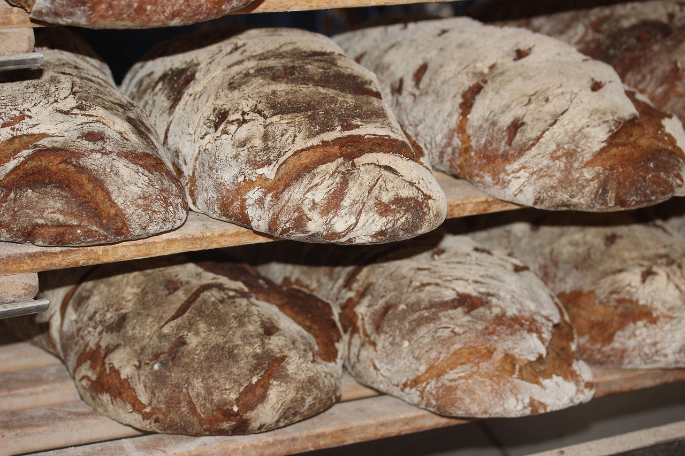

Easy White Bread
Home

Description
A great recipe for an electric breadmaker or do it the traditional way
Ingredients
- 500G Strong White Flour
- 2 TSP Salt
- 7G Sachet Fast Action Yeast
- 3 TBSP Olive Oil
- 300ML Water
Steps
- Step 1 - Mix 500g strong white flour, 2 tsp salt and a 7g sachet of fast-action yeast in a large bowl.
- Step 2 - Make a well in the centre, then add 3 tbsp olive oil and 300ml water, and mix well. If the dough seems a little stiff, add another 1-2 tbsp water and mix well.
- Step 3 - Tip onto a lightly floured work surface and knead for around 10 mins.
- Step 4 - Once the dough is satin-smooth, place it in a lightly oiled bowl and cover with cling film. Leave to rise for 1 hour until doubled in size or place in the fridge overnight.
- Step 5 - Line a baking tray with baking parchment. Knock back the dough (punch the air out and pull the dough in on itself) then gently mould the dough into a ball.
- Step 6 - Place it on the baking parchment to prove for a further hour until doubled in size.
- Step 7 - Heat oven to 220C/fan 200C/gas 7.
- Step 8 - Dust the loaf with some extra flour and cut a cross about 6cm long into the top of the loaf with a sharp knife.
- Step 9 - Bake for 25-30 mins until golden brown and the loaf sounds hollow when tapped underneath. Cool on a wire rack.